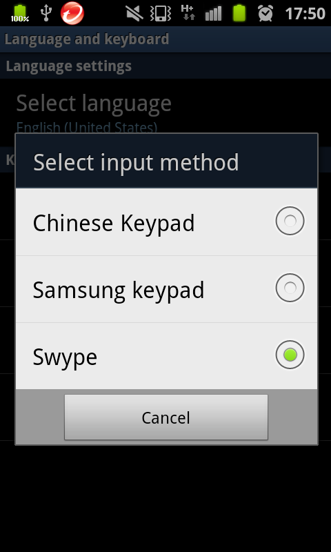

ADB shell command 裡有個 ime，跟 input method 的控制有關。
$ ime
usage: ime list [-a] [-s]
ime enable ID
ime disable ID
ime set ID
The list command prints all enabled input methods. Use
the -a option to see all input methods. Use
the -s option to see only a single summary line of each.
The enable command allows the given input method ID to be used.
The disable command disallows the given input method ID from use.
The set command switches to the given input method ID.在 Samsung Galaxy S2 下的執行結果，每一行都是 input method 的 ID：
$ ime list -s
com.swype.android.inputmethod/.SwypeInputMethod
com.samsung.inputmethod/.SamsungIME
com.sec.android.inputmethod.axt9/.AxT9IME對照 Settings > Language and keyboard > Select input method 的畫面，應該分別對應 Swype、Chinese Keypad 跟 Samsung keypad。（確實很怪，為什麼 com.samsung.inputmethod/.SamsungIME 是 Chinese Keypad 而非 Samsung keypad？）

拿到 input method ID 後，就可以用 ime set 來切換這裡的設定：
$ ime set com.swype.android.inputmethod/.SwypeInputMethod
Input method com.swype.android.inputmethod/.SwypeInputMethod selected|
|
如果要臨時修改輸入法，建議在輸入法被叫出來之前就先完成設定。實驗發現，在輸入法被叫出來之後才透過 ime set 修改輸入法的話，畫面不會有任何反應，輸入法反而變得怪怪的… |
在 HTC Desire S 上：
$ ime list -a -s
org.pocketworkstation.pckeyboard/.LatinIME
com.htc.android.htcime/.HTCIMEService